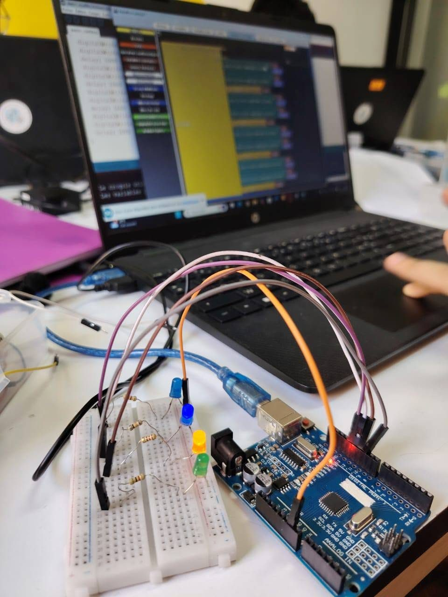
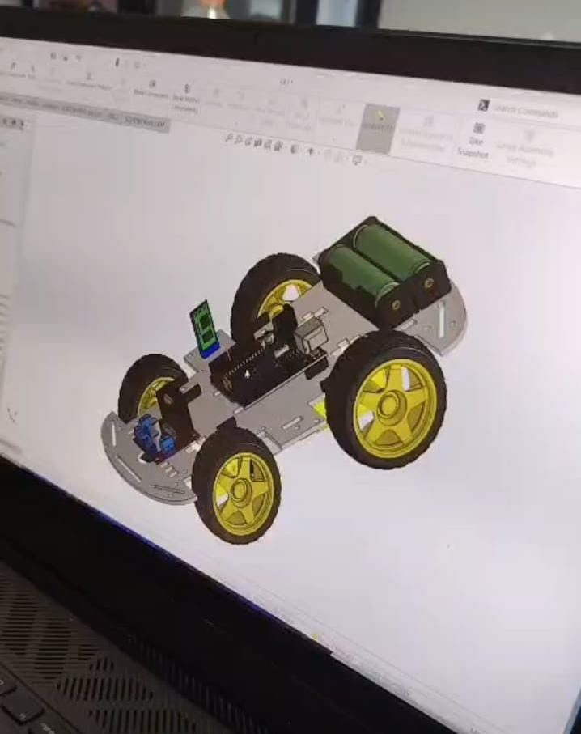
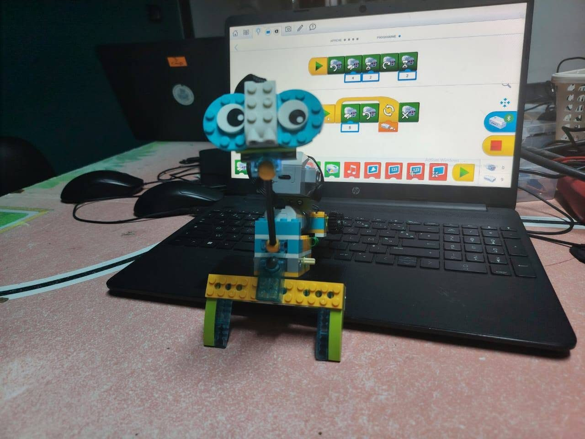
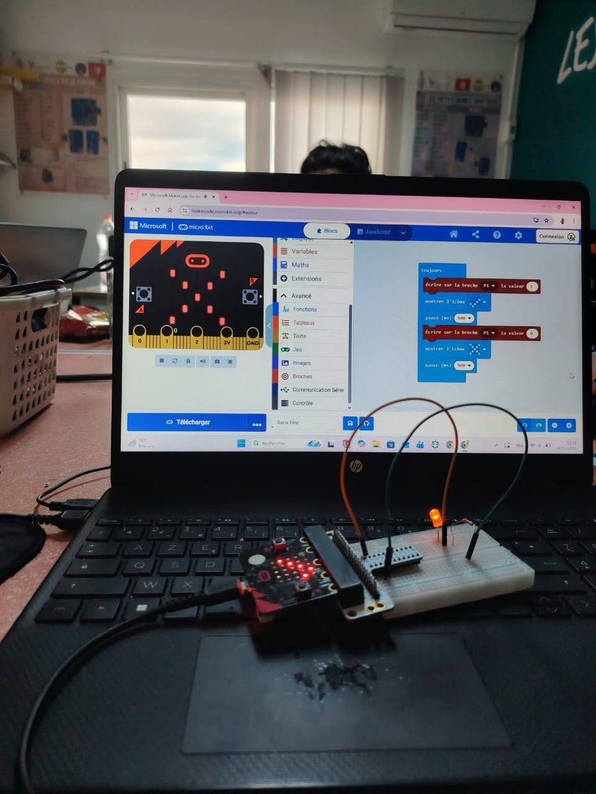
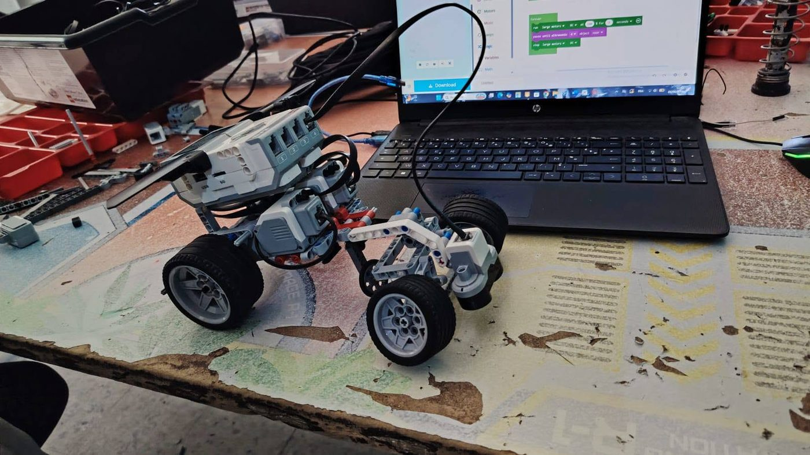
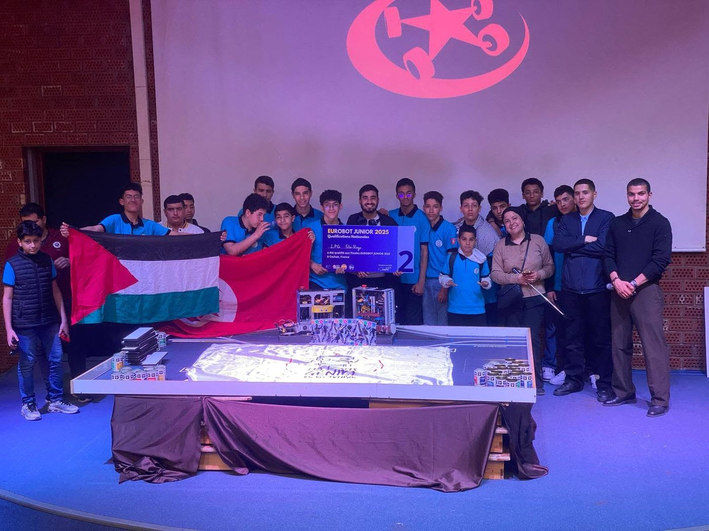
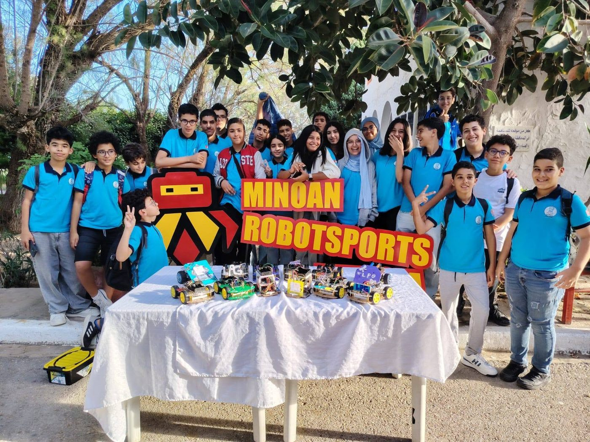
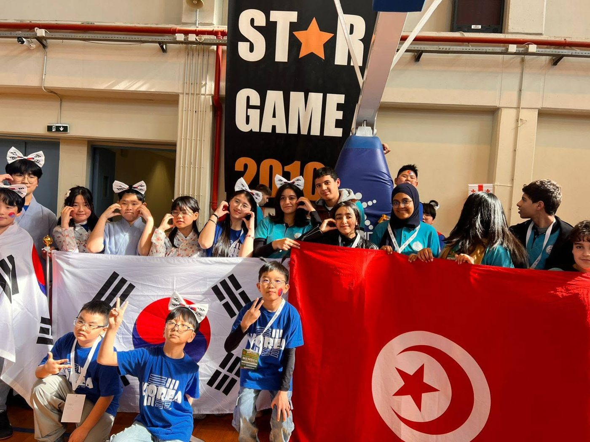
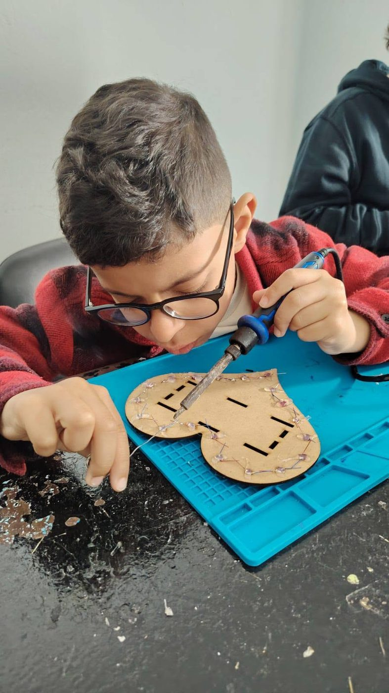
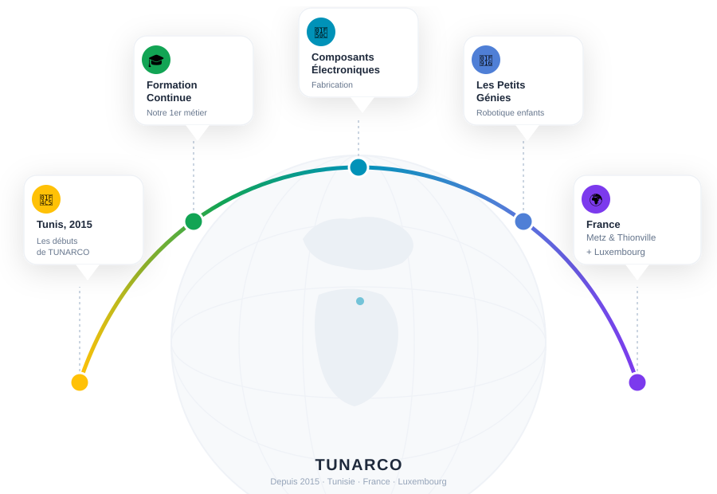

TUNARCO
Les Petits Génies de la RobotiqueL'excellence tunisienne de la formation robotique, à l'échelle internationale
TUNARCO
TUNARCO est une startup tunisienne fondée en 2015, active dans la formation continue et la fabrication de composants électroniques. Son produit phare, Les Petits Génies de la Robotique, forme les jeunes à la robotique, l'IA, la programmation, l'électronique et la conception 3D depuis 2015 — une vraie formation pratique, par projets, sans cours magistraux. Depuis 2026, TUNARCO poursuit son expansion à l'international, avec une présence en France (Metz, Thionville) et au Luxembourg.
Nos moments forts en images
Ateliers, projets et compétitions — un aperçu de la vie du club.

Atelier Arduino
Conception 3D
LEGO WeDo
Micro:bit
Programmation robot
Eurobot Junior 2025 Festival Cachan
Festival Cachan
MRC Minoan Robotsports
Star Game
Atelier soudure🌍 Notre organisation
